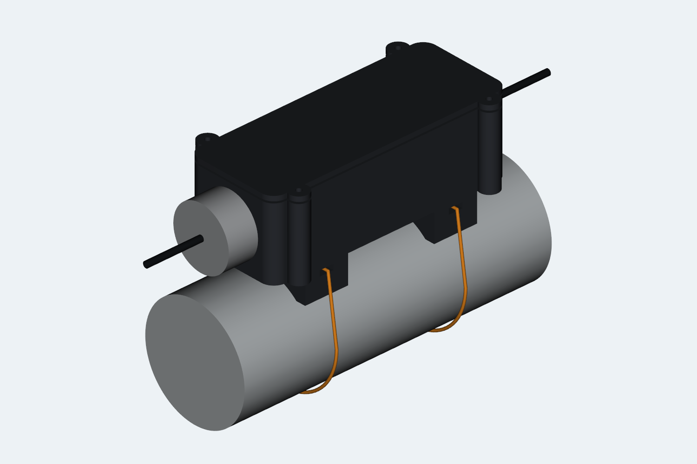
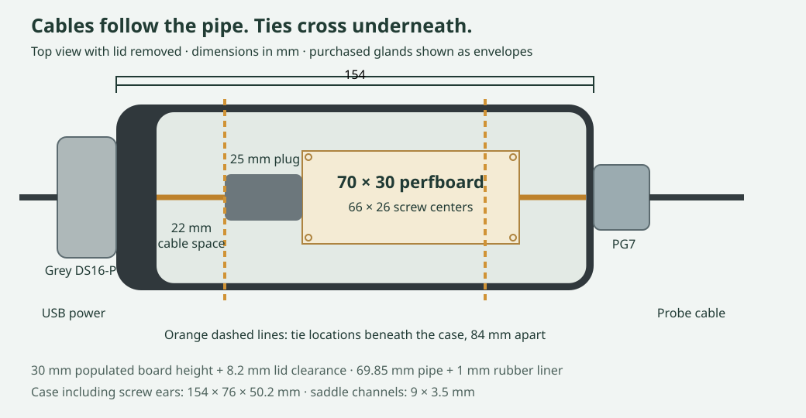
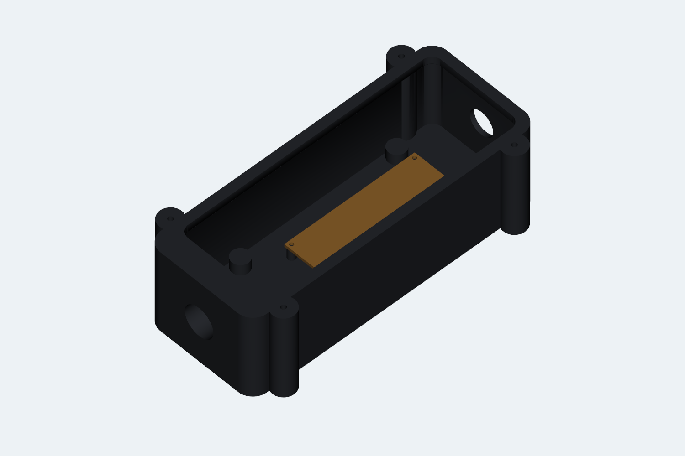
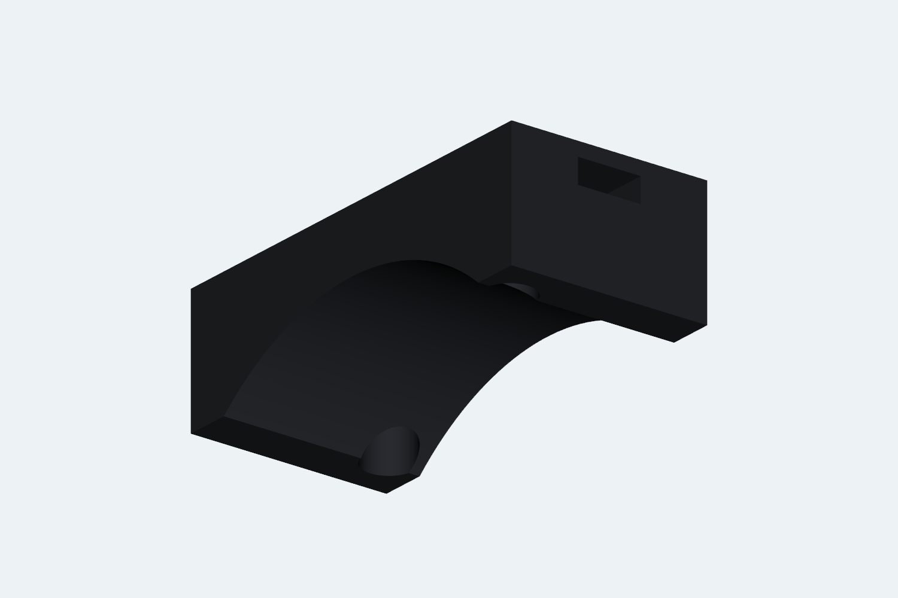
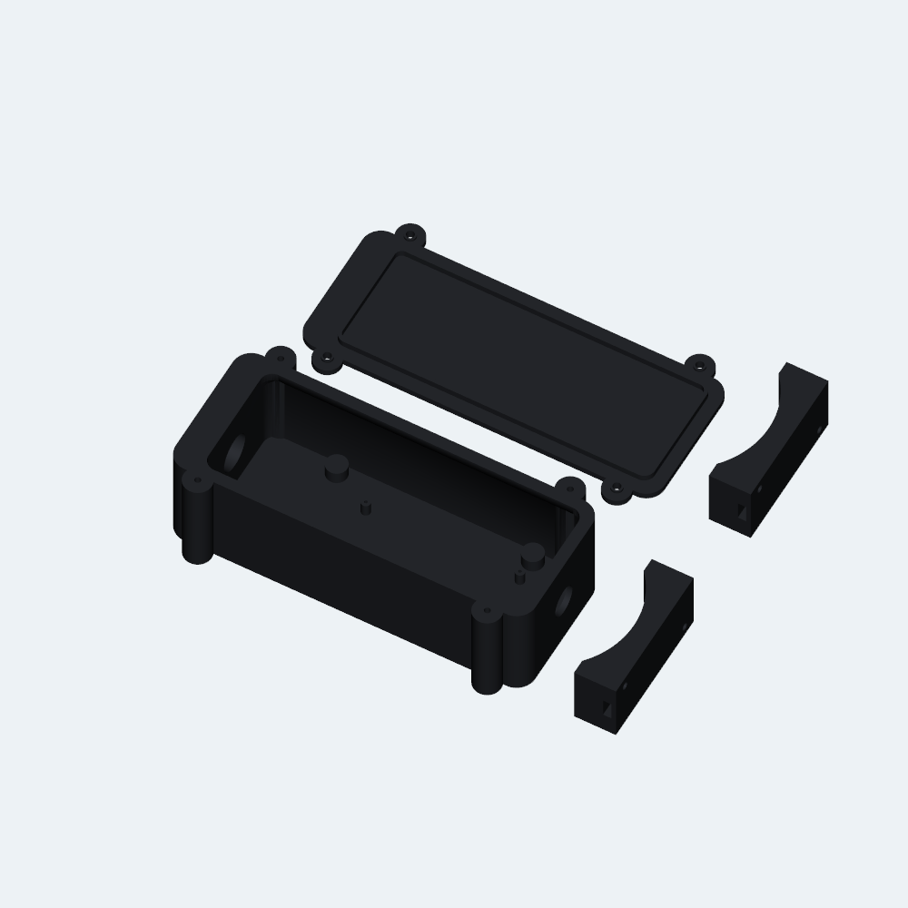

Water-temperature · Enclosure R1 · October 13, 2026
One board. Two cable entries.
A saddle for the pipe.
A black-PETG enclosure for the continuously powered C6 and temperature-probe adapter. The grey Scanstrut DS16-P keeps the USB cable intact; the existing PG7 takes the probe cable out the opposite end.
Native slice: 9 h 37 min · 184.4 g. Reopened and resliced in Bambu Studio 2.8.2.61; embedded meshes match the CAD exports. Physical fit and sealing remain to be checked.

The layout

Room for the existing board
Four posts retain the fitted 66 × 26 mm hole pattern. The board sits 9 mm above the outside floor. Its 30 mm populated height has 8.2 mm clearance to the lid.
The USB plug extends 25 mm beyond the short board end, with another 22 mm for the cable before the USB wall.
Ties stay below the lid
Two saddles, 84 mm apart, match the pipe with a 1 mm rubber liner. Their 9 × 3.5 mm tunnels accept ties up to 7.6 mm wide and 2 mm thick.
The closed case is 154 × 76 × 50.2 mm including screw ears; saddles extend 18 mm below it. Open the lid without cutting the ties.

Parts to have ready
| Qty | Hardware | Use |
|---|---|---|
| 4 | M1.7 × 6 mm self-tapping pan-head screws for plastic | Perfboard; no washers |
| 4 | #4 × ½″ self-tapping pan-head screws (metric: M3 × 12 mm) + 0.5 mm flat washers | Lid |
| 4 | #4 × ⅝″ self-tapping pan-head screws (metric: M3 × 16 mm) + 0.5 mm flat washers | Saddles; head ≤6 mm, washer OD ≤7 mm |
| 1 + 1 | Grey Scanstrut DS16-P kit + existing PG7 gland | USB and probe entry, respectively |
| 2 | Outdoor UV-resistant zip ties, ≥350 mm long, ≤7.6 × 2 mm | Around the pipe, through the saddle tunnels |
| 2 | 1 mm EPDM strips, approximately 28 × 60 mm | Between saddles and pipe |
| 1 | One-piece 1/16″ (~1.6 mm) closed-cell foam gasket | Lid; adhesive on one face; use the template |
Printed pilots need the matching self-tapping screw family, not drill-point screws. Nominal tip clearances with the original metric screws: board 0.8 mm, lid 1.7 mm, saddles 1.0 mm. Check engagement gently by hand; do not bottom out or split the posts.
Buying imperial screws: choose stainless Phillips pan-head, pointed-tip self-tapping sheet-metal screws: four #4 × ½″ for the lid and four #4 × ⅝″ for the saddles. Keep the specified washers and head-size limits. #4 is about 2.85 mm diameter, slightly smaller than M3; its grip in the printed 2.6 mm pilots is untested. Try one gently by hand and stop if it spins without tightening. Do not enlarge the pilots for #4 or substitute #6 (about 3.5 mm) without revising the holes. Avoid self-drilling tips and countersunk heads. These substitutions apply only to the lid and saddles; use the supplied DS16 fasteners. Screw diameter reference.
Rigid gasket tracing plate
Prefer tracing plastic? Download the tracing plate STL (STEP). This flat, open-center ring is 152 × 58 × 2 mm, with the same inner and outer outlines as the foam gasket. Import into Bambu Studio in millimetres at 100% scale, lay flat, and print in PETG at 0.20 mm layers with 5 top and 5 bottom layers; no supports. It is a separate print from the four-part enclosure project. Remove any brim or edge burrs before tracing.
Hold the ring flat on the foam backing and trace both edges with a fine pencil. Cut to the traced boundaries; the wider end faces the grey DS16 gland. Check the printed outside measures 152 × 58 mm. This is a tracing tool, not the installed gasket: use the cut 1/16″ closed-cell foam to seal the lid.
Assembly order
- Dry-fit the print. Remove brims and strings. Check the board holes, lid lip and screw engagement. The intact molded USB plug must pass through the DS16's 16 mm opening.
- Mark the DS16 mounting holes from its actual base. With electronics removed, center it over the larger end opening, then mark and drill the three mounting pilots through the 13 mm wall. The manufacturer suggests 2.5 mm pilots for the No. 4 screws in hard material; verify gentle fit in PETG. Its 36.5 mm drawing dimension is the base diameter, not the bolt circle. Use the supplied gasket and the manufacturer's silicone instructions at the screws. Clean out every chip.
- Fit both glands and cables. DS16 at the thicker USB wall; PG7 at the opposite 2.4 mm wall. Use the DS16 bung that fits the cable jacket, following its instructions. Each gland grips one intact round jacket. No USB cable cutting is required.
- Attach the saddles before mounting on the pipe. #4 × ⅝″ (or M3 × 16) screws and washers go through the recessed underside holes into the case's blind pilots. Then fit the perfboard with M1.7 × 6 screws, plug in USB, and connect the probe wires. Verify a live reading.
- Fit the foam gasket and lid. Use the rigid tracing plate, or print the paper template at 100% and check its 50 mm line, then cut one foam ring. The wider end goes toward DS16. Attach it to the body rim. Orient the lid lip to match the thick USB wall and tighten #4 × ½″ (or M3 × 12) screws evenly until the four stops seat. The 1.2 mm gap gives nominal 25% foam compression.
- Mount to the pipe. Place one 1 mm EPDM strip in each saddle. Thread each tie through its tunnel and around the pipe; keep its head outside the tunnel. Leave slack and drip loops in both cables. Recheck readings after closing.


Checked, and still to check
CAD checks passed for all solids, watertight meshes, component clearances, pipe fit allowance, tie passage and screw access. The native Bambu project passed its reopen/reslice check, all four embedded meshes match the STLs, and the plate has no warnings.
Physical fit, seal performance, hot-sun temperature and long-term PETG/tie strength are untested. A gland's IP rating does not certify the printed enclosure. Test sealing with electronics removed before relying on it outdoors. For USB recovery, remove the lid and unplug the cable at the C6; routine updates stay wireless.
Native offscreen preview failed with “X11: The DISPLAY environment variable is missing”; the project includes an actual-CAD preview instead. Stock reserved-tool diagnostics T65279/T65535 remain, with unchanged machine G-code.
Detailed build notes and reproduction commands · CAD validation · Project validation